Gallery / Music
Music
Pianists, cellists, trumpeters and divas, caught mid-performance.

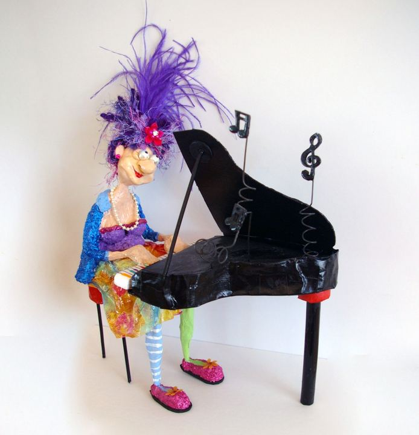

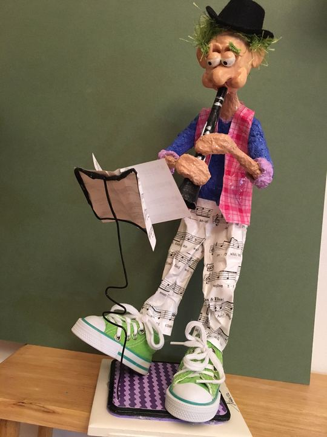

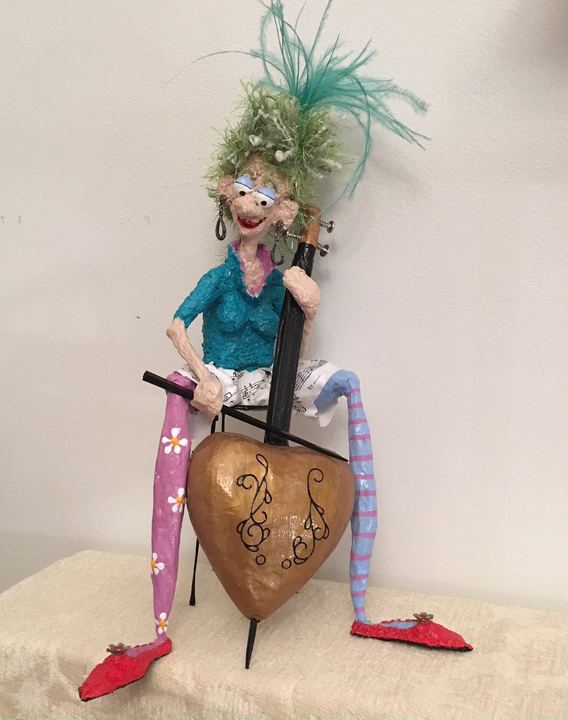
 2 views
2 views
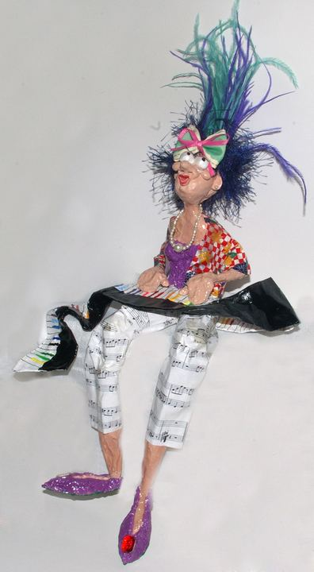

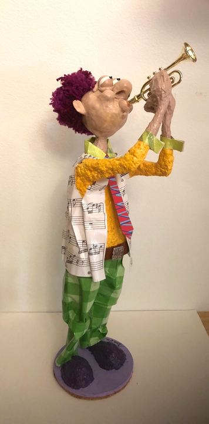
2 views
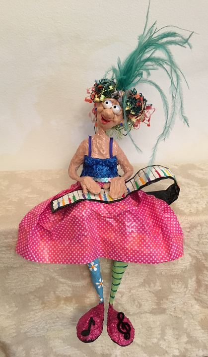

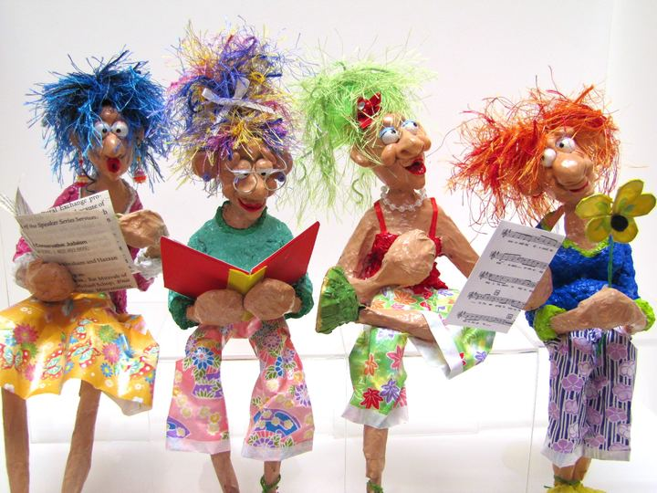

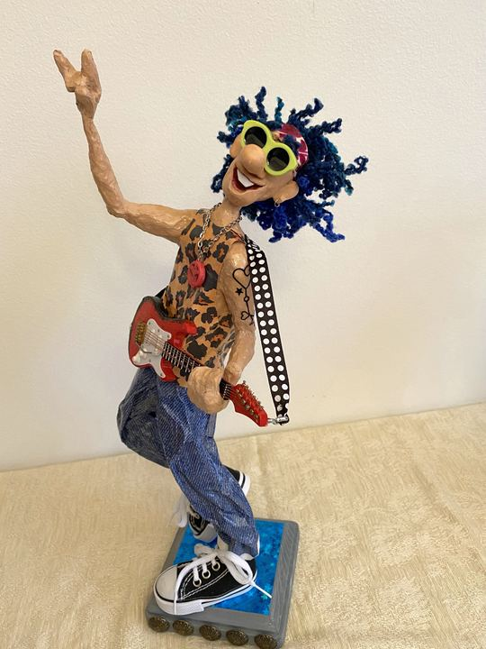

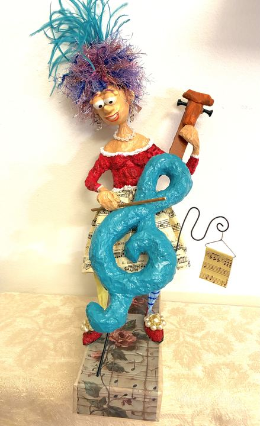

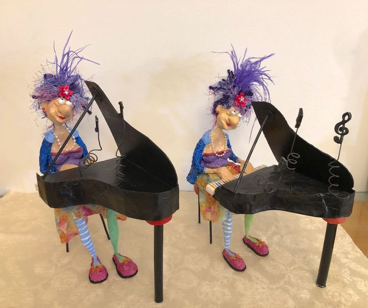

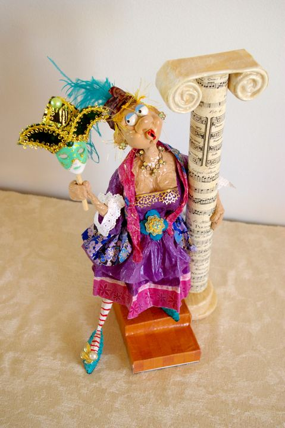

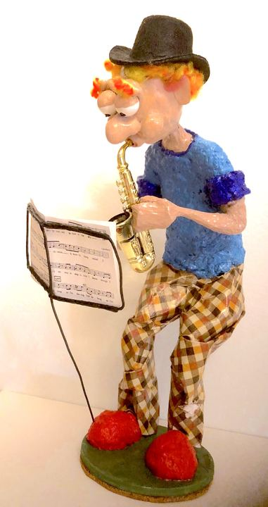
2 views
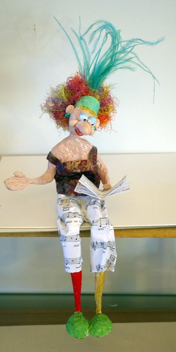

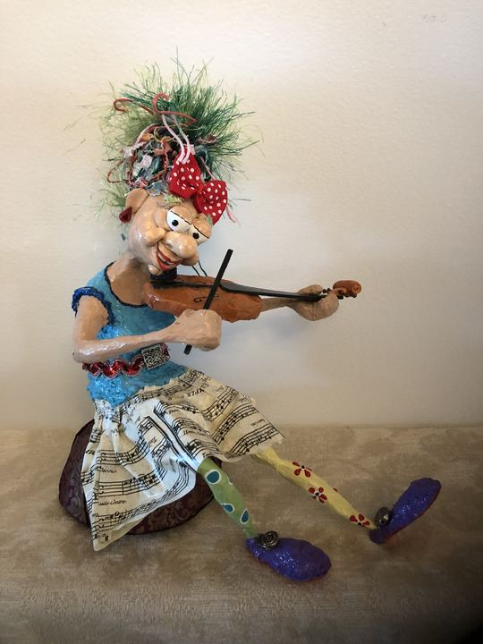
2 views
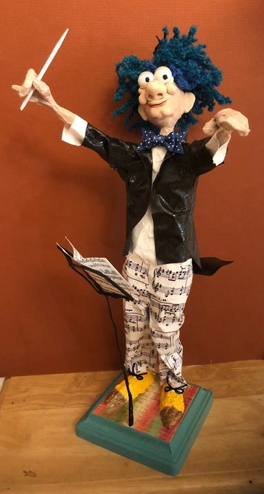

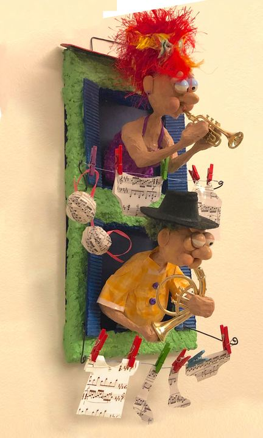
2 views
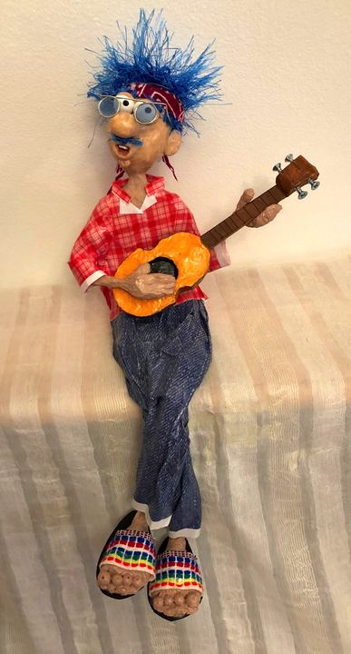

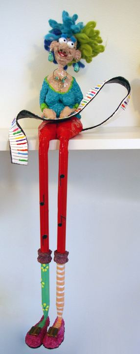

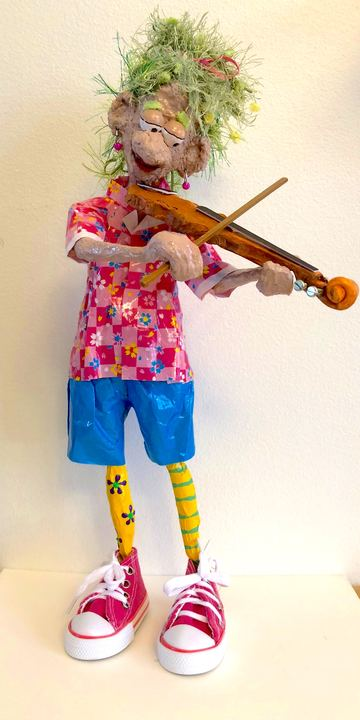

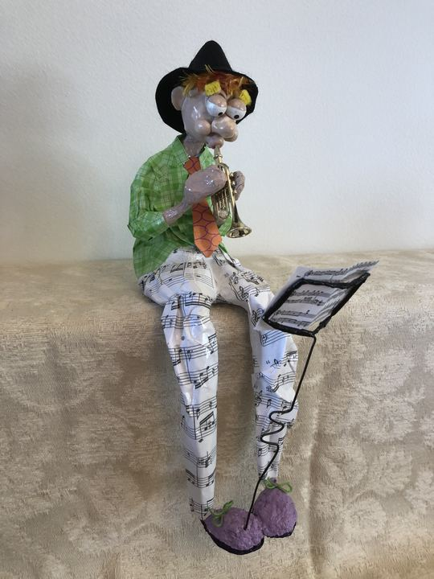

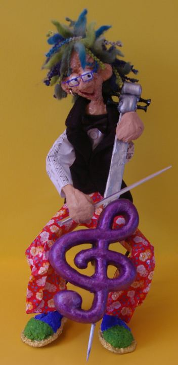

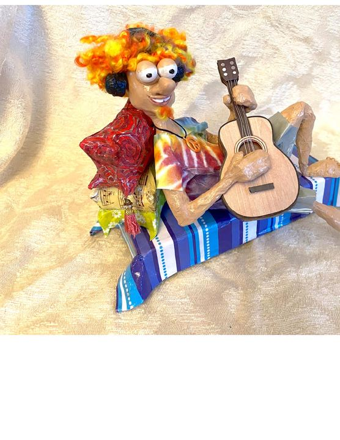

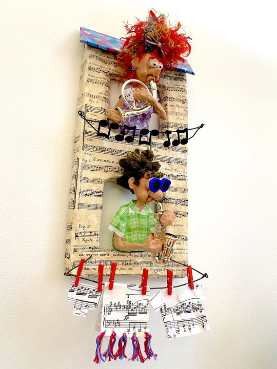
3 views
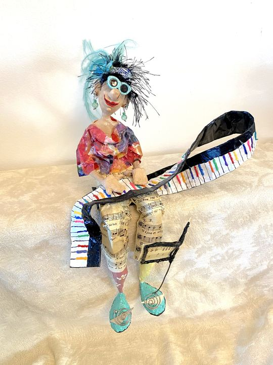

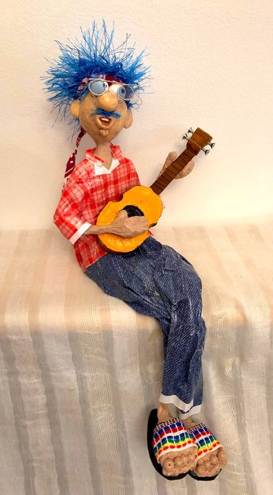
Love one of these? Most pieces are one-of-a-kind, but I’m happy to create something similar just for you.
Ask about a commission